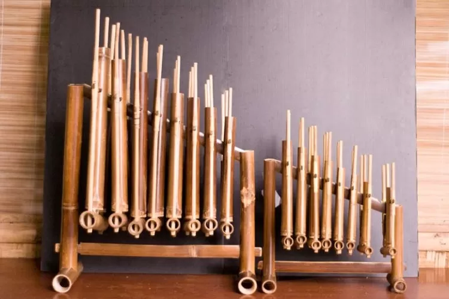

Langkah 1: Unggah File Audio
Pilih file audio yang berisi suara alat musik tradisional. Pastikan file berformat MP3, WAV, atau OGG dengan durasi antara 5 hingga 60 detik.
Selamat datang di NadaAI! Platform AI cerdas untuk memprediksi alat musik tradisional Indonesia melalui suara. Jelajahi sekarang!
Lebih dari 15,000+ penggemar musik tradisional bergabung dalam prediksi alat musik kami
Alat musik tradisional Indonesia
Prediksi alat musik dengan AI
Pengguna aktif terus berkembang
Diakui dalam teknologi prediksi
NadaAI adalah platform AI yang dapat memprediksi alat musik tradisional Indonesia melalui analisis suara. Menggunakan dataset audio, sistem ini mengidentifikasi berbagai alat musik seperti Angklung, Gamelan, Sape, dan Seruling. Platform ini bertujuan melestarikan budaya Indonesia dengan teknologi inovatif yang mudah diakses.
Pengalaman dalam memberikan solusi teknologi untuk alat musik tradisional
Dataset ini berisi data audio alat musik tradisional Indonesia, termasuk Angklung, Gamelan, Sape, dan Seruling, dengan data audio berformat MP3.
Angklung adalah alat musik tradisional dari Indonesia yang terbuat dari bambu dan dimainkan dengan cara digoyang. Alat musik ini berasal dari Jawa Barat dan memiliki nilai budaya yang tinggi.
Gamelan adalah ansambel musik tradisional Indonesia yang terdiri dari berbagai alat musik, seperti gong, kendang, dan metallophone. Gamelan berasal dari Bali dan Jawa, serta menjadi bagian penting dari kebudayaan tersebut.
Sape adalah alat musik tradisional khas suku Dayak di Kalimantan. Sape merupakan alat musik petik yang digunakan dalam upacara adat dan pertunjukan musik khas Dayak.
Seruling adalah alat musik tiup tradisional Indonesia yang terbuat dari bambu. Seruling digunakan dalam berbagai upacara adat dan kesenian, dengan melodi yang indah dan lembut.
Pengumpulan dataset audio yang digunakan untuk pelatihan model prediksi alat musik tradisional.
Proses pembersihan dan ekstraksi fitur dari dataset audio untuk mempersiapkan data bagi model machine learning.
Menggunakan algoritma machine learning untuk membangun model yang dapat mengenali alat musik tradisional berdasarkan fitur audio.
Menyiapkan API untuk menghubungkan frontend dengan model machine learning yang telah dibuat untuk melakukan prediksi.
Membangun antarmuka pengguna yang memungkinkan pengguna untuk mengunggah file audio dan melihat hasil prediksi alat musik tradisional.
Pengguna mengunggah file audio, sistem melakukan prediksi, dan menampilkan hasil alat musik yang terdeteksi berdasarkan input audio.
Ikuti kuis seru untuk mengenal lebih dalam tentang alat musik tradisional Indonesia!
Apa nama alat musik tradisonal berikut?
Dengarkan dan tebak alat musik dari suara!
Sebuah alat musik petik yang digunakan dalam upacara adat dan pertunjukan yang sering digunakan oleh suku berasal dari kalimantan, disebut sebagai alat musik?
Tim kami terdiri dari dua individu yang penuh semangat dan dedikasi dalam mengembangkan teknologi deep learning untuk melestarikan dan mengenalkan kekayaan budaya Indonesia melalui alat musik tradisional.
Saya adalah seorang penggemar teknologi yang selalu berusaha memanfaatkan ilmu yang saya pelajari untuk kepentingan budaya Indonesia. Melalui proyek ini, kami berupaya memperkenalkan dan melestarikan alat musik tradisional Indonesia menggunakan teknologi deep learning.

Dalam proyek ini, saya berfokus pada penerapan teknik deep learning untuk mengenali dan mengklasifikasikan alat musik tradisional Indonesia. Ini adalah langkah kami untuk menggabungkan budaya dengan teknologi modern demi masa depan yang lebih canggih.
Unggah file audio dan dapatkan prediksi alat musik tradisional berdasarkan suara yang Anda pilih.
Untuk memulai prediksi, ikuti langkah-langkah berikut:
Pilih file audio yang berisi suara alat musik tradisional. Pastikan file berformat MP3, WAV, atau OGG dengan durasi antara 5 hingga 60 detik.
Setelah memilih file audio, klik tombol "Prediksi" untuk memulai analisis. Sistem akan memproses audio yang diunggah dan memberikan hasil prediksi.
Hasil prediksi akan ditampilkan dalam bentuk nama alat musik tradisional yang diprediksi berdasarkan suara audio yang Anda unggah.
Pilih file audio yang berisi suara alat musik tradisional, kemudian klik tombol "Prediksi" untuk melihat hasilnya.
Menunggu file audio...